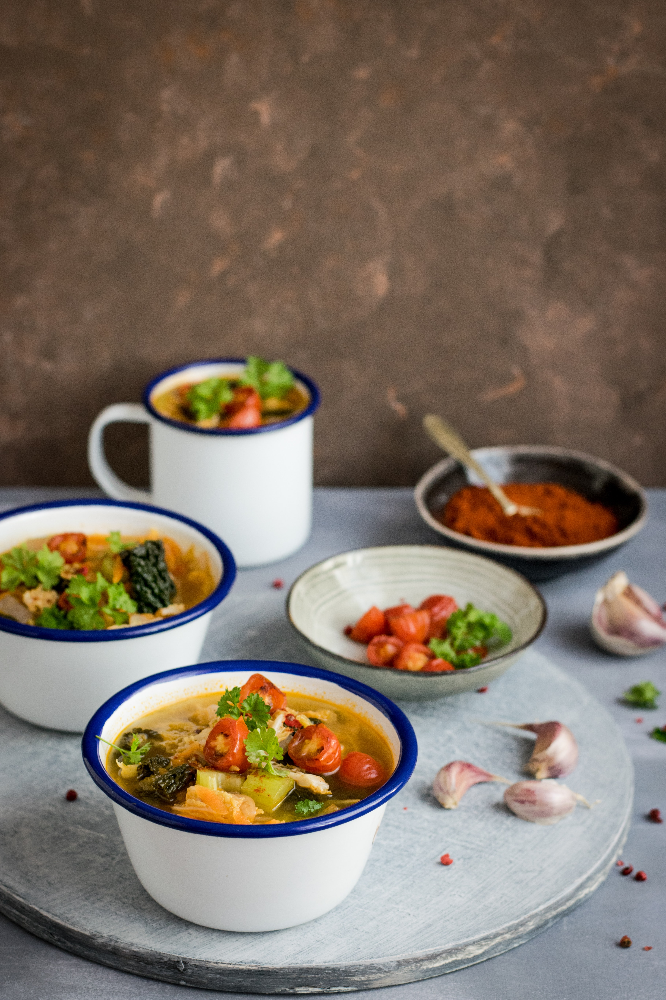

The Most Modular: Stew
Home

Description
Despite what other pages on this site may claim, there is nothing more modular than stew. The ingredients are simple: a liquid and a solid. As you may have already discovered, there are a nearly infinite combination of liquids and solids. For the purposes of this article, we'll consider the relatively small, but still vast, subset of edible liquids and solids.
Ingredients
- vegetables
- protiens
- spices
- extras
Steps
- Procure your ingredients.
- You can essentially add any vegetables you like. It's hard to go wrong with carrots, tomatoes, or celery, but basically anything could be good.
- Meats are always a good protein, although you could add tofu, or an alternative meat.
- There are such an abundance of potential spices. I would always reccomend salt and pepper to begin with. One can branch out from there, trying things like curry powder, steak seasoning, garam masala, or essentially anything else you can think of.
- For the extras, I would again reccomend bacon bits and cheeses, like feta, brie, or cheddar, for example. Beans are always an excellent idea.